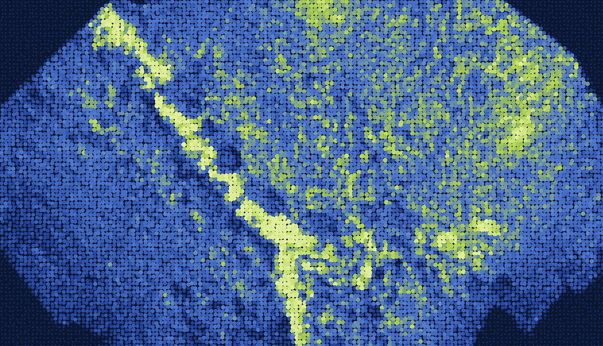
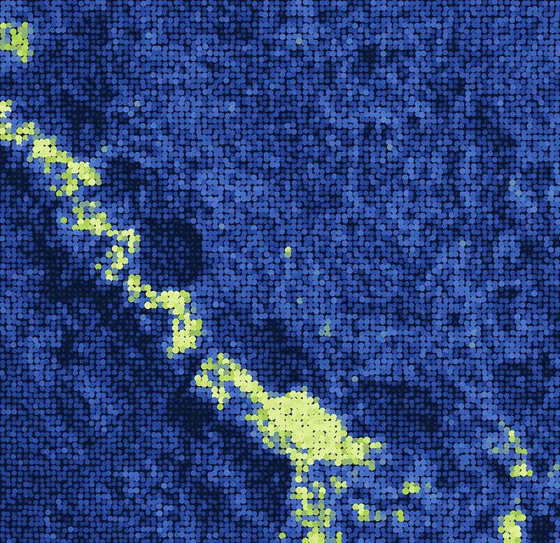
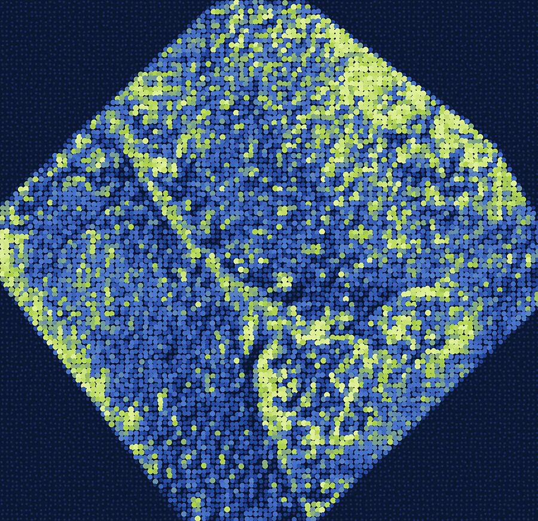
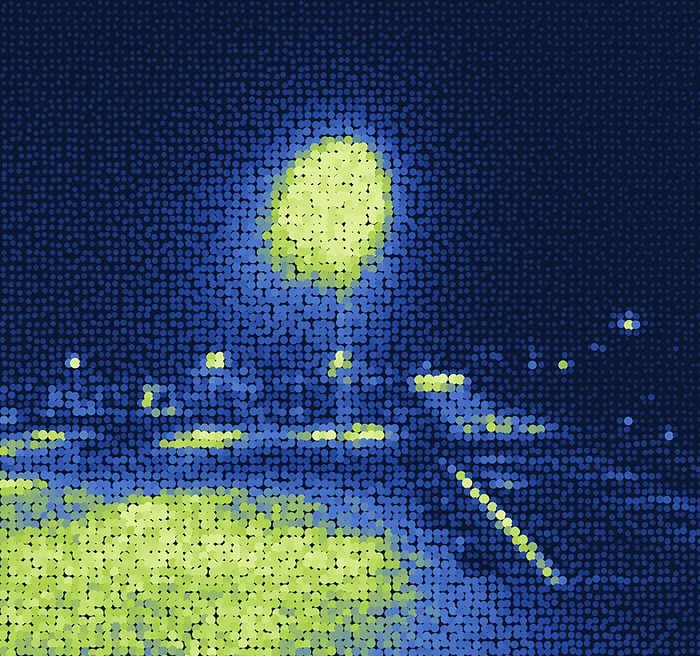
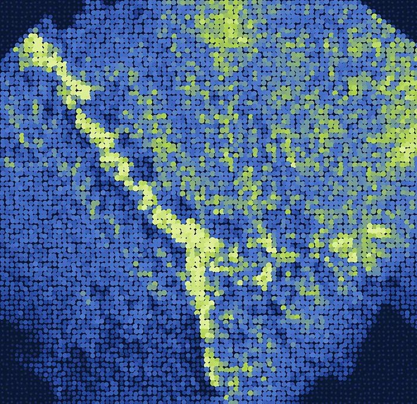

Project
Typhon
The first map
after the landslide
Image: our orthophoto from USGS public survey photos (30 Apr 2024)
After a landslide, responders need a current map within hours. The next satellite pass can be days away.
Roads, bridges and slopes have moved. The maps on hand show where things were. Teams need to know which road a fire truck can still take, how wide a gap is, and where a helicopter can land, and they need it before the internet comes back.


Photos from a consumer drone become a map, on one laptop, with no internet, and the map says how far off it is.

01Fly
Photos or a video from a consumer drone. Its GPS places every frame; no ground control is laid.

02Process
OpenDroneMap runs on the laptop's own GPU and builds the map and terrain. Nothing goes online.
03Deliver
Road status per vehicle, measurements with their error, and files for print and GIS: PDF, KMZ, GeoPackage.
Measured on USGS public survey photos (South Fork, California, 30 Apr 2024), not our footage. The standard asks for at least 30 checkpoints; this site gave us 3, so treat the error as a first estimate.
Our planned survey flights on 29–30 Oct were cancelled by rain.